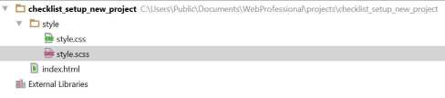

Aufsetzen eines Web-Projektes
Uebersicht
- Voraussetzungen
- Dateistruktur
- html
- git
- npm init (Package Manager)
- gulp
- Browsersync
- SASS
- Nice to have with SASS: Tools
Voraussetzungen (Uebersicht)
node.js (Uebersicht)
Ein Framework / Interpreter-Umgebung, womit sich Web-Server realisieren lassen. node läuft in der JavaScript-Laufzeitumgebung 'V8'. Es beinhaltet den Paketmanager 'npm'.
npm
Wichtiges Ding: Damit können weitere Tools installiert werden, die dann unter node.js Framework laufen. Die Installationen müssen im Command-Fenster oder alternativ in der git-Shell oder auch phpStorm-Terminal erfolgen. Das wichtigste Kommando dürfte dabei
npm install
sein. Wichtige Parameter:
-goder--globalInstallation Global (Default wäre Lokal und nur für diese Instanz (Basispfad) verfügbar (Global empfohlen).
--save-devoder-DDas installierte Paket wird in den Abhängigkeiten erscheinen (package.json). Dazu sollte die Installation im entsprechenden Projektverzeichnis erfolgen.
Dumm, wenn die Installation bereits einmal mit '--global' erfolgte ... dann bleibt wohl nur das manuelle Ergänzen von 'package.json' (wenn man den den ursprünglichen Eintrag im damalig aktuellen Projekt findet ...).
Vielleicht macht es Sinn
- man notiert sich das 'ursprüngliche' Projekt
- ein 'Modell'-Projekt zu erstellen, damit man die entsprechenden Einträge dort holen kann
- man installiert alles 'Lokal'
- (Das scheint mir das Beste!) man installiert alles 'global' und zwar für jedes Projekt immer wieder ... wenn es denn funktioniert ('proof of concept' fehlt bisher) ...
git (Uebersicht)
git ist ein Versionierungssoftware. Download ist zu finden unter https://github.com. Möglicherweise ist dort eine aktuellere Anleitung, um git zu installieren - also vor Verwenden der Anleitung hier macht es Sinn, dies nochmals zu überprüfen.
Man kann/könnte mit git auch via Internet einen Master pflegen und so indirekt auf verteilten Systemen arbeiten. Der Code, der dort publiziert wird, ist allerdings öffentlich. Man kann auch privaten Raum haben - der ist dann allerdings kostenpflichtig. Eine Alternative zu git wäre z.Bsp. Subversions (oder so), was aber im Kurs nicht relevant ist.
Dateistruktur (Uebersicht)
Die Basisstruktur ist relativ einfach und enthält mindestens das html-Startfile 'index.html' und empfehlenswerterweise einen Ordner für das Stylesheet, welcher zB. 'style' heissen könnte. Darin das Stylesheet (bsp. 'style.css' und ggf. das zugehörige SASS-CSS-File.
Empfehlenswerterweise (Bilder sagen mehr als tausend Worte) gleich noch ein Ordner 'img' anlegen, um die Bilder abzulegen.
Je nach Komplexität der Site (oder neu-web-deutsch 'App') kann dieses Hauptstruktur weiter verfeinert werden - mit weiteren Ordnern pro Seite der App.
HTML Struktur (Uebersicht)
<!DOCTYPE html>
<html lang="en">
<head>
<meta charset="UTF-8">
<link rel="stylesheet" type="text/css" href="css/layout.css">
<title>Set up new Project</title>
</head>
<body>
<header>
<nav>
</nav>
</header>
<main>
<article>
</article>
</main>
<aside>
</aside>
<footer>
</footer>
</body>
</html>
git (Uebersicht)
Man kann das Projekt unter Versionskontrolle stellen. Siehe dazu auch git unter Voraussetungen. Hier wird nicht auf die Variante mit Internet eingegangen - was der Autor vielleicht später bedauern wird ...
-
Download und install git an und für sich (nicht hier beschrieben)
-
Git Shell (oder einen anderen Kommandointerpreter) starten und in den die Basis des soeben erstellten Web Dateistruktur wechseln
-
Kommando:
git initErstellt und initialisiert den 'Master' - für die Erstentwicklung genügt das. Für die Weiterentwicklung sollte dann aber ein Entwickler-Branch erstellt werden, damit im 'Master' Hot Fixes vollzogen werden könn(t)en.
-
Erstellen eines Textfiles '.gitignore'. Darin können Files/Ordner von git ausgeschlossen werden, indem man einfach den Pfadnamen angibt - Basis ist - man ahnt es - der Basispfad.
npm init (Package Manager) (Uebersicht)
Erstellt das File package.json worin all die weiteren Installation festgehalten werden,
sofern man mit der Option --save-dev installiert. Wird auch als Package Manager
bezeichnet.
npm initDas Package wird initialisiert - dazu werden verschiedene Angaben abgefragt, diese sind mehr oder minder anzugeben - was halt grad so Sinn macht ... Die Angaben werden im 'package.json' im Root des Projektes gespeichert.
Gulp (Uebersicht)
'gulp' ist ein Toolkit, womit Abläufe automatisiert werden können. Es ist Voraussetzung für die Automatisierung von zum Beispiel SASS (CSS-Präprozessor) oder Browsersync etc.
Installation:
-
einmalige, globale Installation:
npm install -g gulp -
Pro Projekt - erstellt den Ordner 'node_modules' mit den benötigten Modulen:
npm install gulp --save-dev
Die Automationen werden im File 'gulpfile.js' im Basisverzeichnis des Projektes programmiert (siehe dazu Anweisungen in den entsprechenden Tools).
.gitignore:
Verzeichnis 'node_modules' und die Files darin: Es lohnt sich nicht, diesen 'Overhead' zu 'mitzu-git-ten' und das Verzeichnis node_modules aus git ausgeklammert werden.
Eintrag auf eigener Zeile: node_modules/
Browsersync (Uebersicht)
'Manuell'
Browsersync synchronisiert die aktuelle Entwicklung mit dem gewünschten Browser, dass man das Resultat stets überprüfen kann. Unklar im Moment: Wie funktioniert das mit PHP
Browsersync setzt voraus, dass 'node.js' installiert ist! Browsersync muss danach nur einmal in einer Kommandoshell (wie z.b. DOS-Command, git-Shell, PhpStorm Terminal).
Browsersync muss pro PC nur einmal installiert werden, Kommando:
npm install -g browser-sync
Start:
browser-sync start --system
Der Start blockiert die Shell - deshalb Tipp: Zweite Shell Öffnen. Um den Effekt 100% erhalten zu können, sind offene Browser am besten zu schliessen.
Details: https://browsersync.io
'Automatisiert'
Browsersync kann auch mit Hilfe von 'gulp' automatisiert werden:
-
In einem Command-Interpreter gult browser-sync installieren:
npm install browser-sync gulp --save-dev -
'gulpfile.js' im Root-Verzeichnis erstellen/modifizieren:
var gulp = require('gulp'); // falls nicht schon vorhanden var browserSync = require('browser-sync').create(); // Static server gulp.task('browser-sync', function() { browserSync.init({ server: { baseDir: "./" } }); }); -
Automatisierung Browsersync starten:
gulp browser-sync
SASS (Uebersicht)
SASS ist ein automatisierbarer Precompiler, welcher für CSS-Files Features unterstützt, die CSS an sich missen lässt So können Strukturen, Templates/Variablen und sogar Funktionen definiert werden.
Aktivitäten im Command-Shell
- Basisverzeichnis der angehenden Web-Site / Command-Shell (zB Phpstorm Projekt) öffnen
- Kommando:
npm install --save-dev gulp-sassInstalliert SASS.
- Automatisierung SASS programmieren:
- 'gulpfile.js' im Root-Verzeichnis erstellen/modifizieren.
/** * Created by chwaelti on 27.12.2016. */ /* with loads copying from Ryan Christiani ryanchristiani.com/getting-started-with-gulp-and-sass/ */ var gulp = require('gulp'); var sass = require('gulp-sass'); /* Task SASS-Precompiler ausführen */ gulp.task('styles', function() { /* Source-Directory (relativ zu gulpfile.js) (/**/ wuerde Subdirectories beruecksichtigen) */ gulp.src('style/*.scss') .pipe(sass().on('error', sass.logError)) /* Target-Directory (relativ zu gulpfile.js) */ .pipe(gulp.dest('style/')); }); /* Watch-Task: SASS-Files beobachten und ggf. 'styles' ausfuehren */ gulp.task('sass:watch',function() { gulp.watch('style/*.scss',['styles']); });
- 'gulpfile.js' im Root-Verzeichnis erstellen/modifizieren.
- Automatisierung SASS starten:
gulp sass:watch
Nice to have with SASS: Tools (Uebersicht)
sourcemaps (Uebersicht)
Sourcmaps ist ein Hilfstool, womit man HTML-Sourcecode und CSS/SASS besser mappen kann. Das kann beim Suchen von Fehlern helfen. Just try it out ...
Installation:
-
Rootverzeichnis mittels Commandinterpreter:
npm install gulp-sourcemaps --save-dev -
Im File 'gulpfile.js' (ist ja wahrscheinlich mittlerweile vorhanden):
var sourcemaps = require('gulp-sourcemaps');Dazu die folgenden zwei Zeilen beim SASS-Teil hinzufuegen:
gulp.task('sass', function () { return gulp.src(‘css/styles.scss’) .pipe(sourcemaps.init()) .pipe(sass().on('error', sass.logError)) .pipe(sourcemaps.write()) .pipe(gulp.dest('css')); } );
Compressing CSS (Uebersicht)
Mit folgendem Einschub im Sass-Code-Teil des 'gulpfile.js' kann der Output ins CSS 'compressed' werden. Er ist dann möglicherweise nicht mehr so leserliche - was aber keine Rolle spielen soll, wenn man CSS mit SASS 'codiert'.
gulp.task('sass', function () {
return gulp.src(‘css/styles.scss’)
.pipe(sass(
{
outputStyle: ‘compressed'
}
).on('error', sass.logError))
.pipe(gulp.dest('css'));
}
);
Autoprefixer (Uebersicht)
Autprefixr hilft bei verschiedenen Browserversionen. Leider wurde das im Kurs nicht so verdeutlicht. Just try it out ...
Installation:
-
Rootverzeichnis mittels Commandinterpreter:
npm install gulp-autoprefixer --save-dev -
Im File 'gulpfile.js' (ist ja wahrscheinlich mittlerweile vorhanden) - folgende Ergänzungen:
var autoprefixer = require('gulp-autoprefixer');Dazu die folgende Zeilen beim SASS-Teil hinzufuegen:
gulp.task('sass', function () { return gulp.src('css/styles.scss') .pipe(sourcemaps.init()) .pipe(sass( { outputStyle: 'compressed' } ).on('error', sass.logError) ) .pipe(sourcemaps.write()) .pipe(autoprefixer({ browsers: ['last 3 versions'], cascade: false } ) ) .pipe(gulp.dest('css')) } );